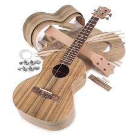
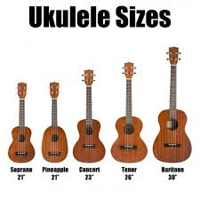

El Ukulele (del hawaiano ukulele) es un instrumento de cuerda pulsada utilizado como instrumento principal en la música de las islas Hawái, Tahití y la isla de Pascua que originalmente tenía cinco cuerdas. Es una adaptación del cavaquinho portugués creada en la década de 1880 en Hawái por inmigrantes portugueses. Posteriormente se difundió por la Polinesia francesa y en la Isla de Pascua con un tallado más rústico, dando lugar al ukelele tahitiano o polinésico. En la Polinesia no existían instrumentos de cuerda antes de los siglos XIX y XX, respectivamente, siendo el ukelele un instrumento reciente en esta cultura.
1. El Ukulele nació en Hawái aunque el origen es portugués
2. El Ukulele significa 'Pulga saltarina' ya que los nativos hawaianos lo escuchaban similar
3. Su inicio fue en 1989
4. Existen varios tamaños:
